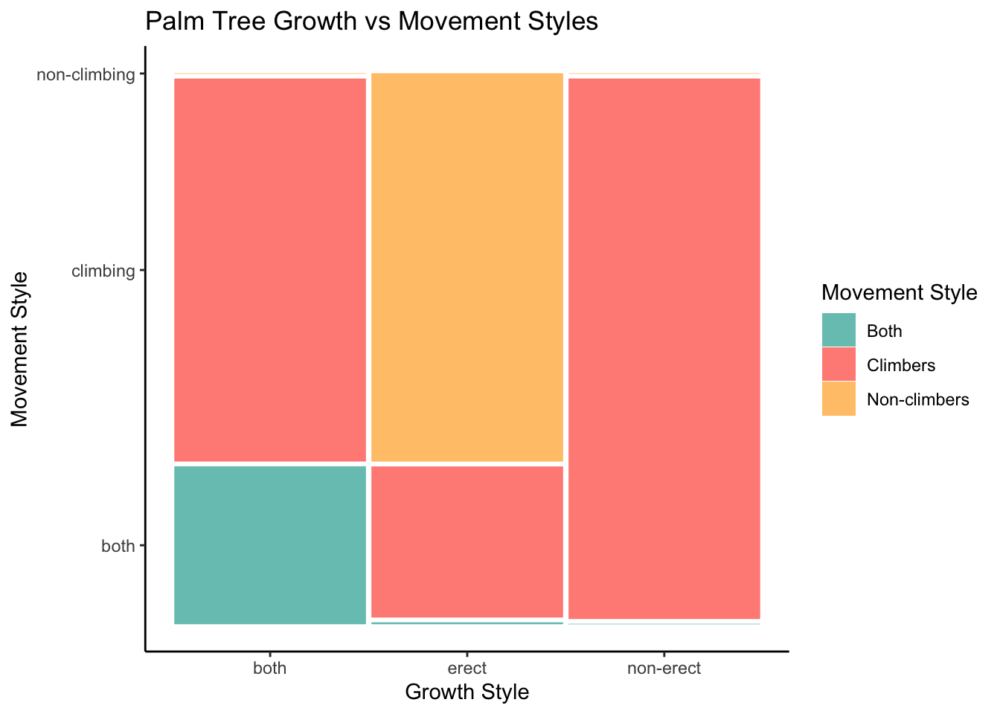
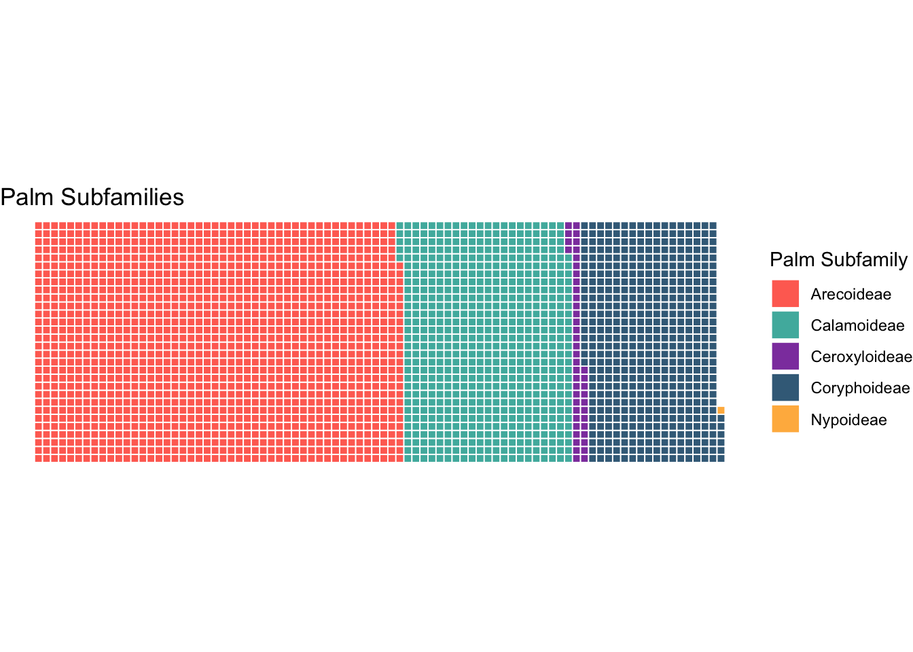
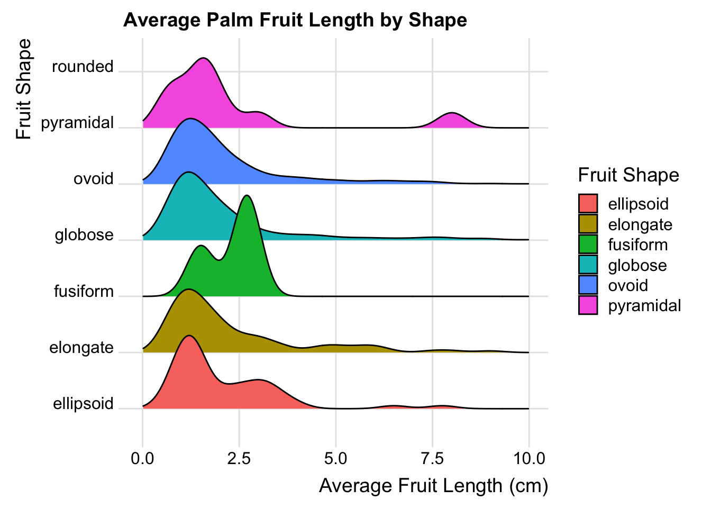
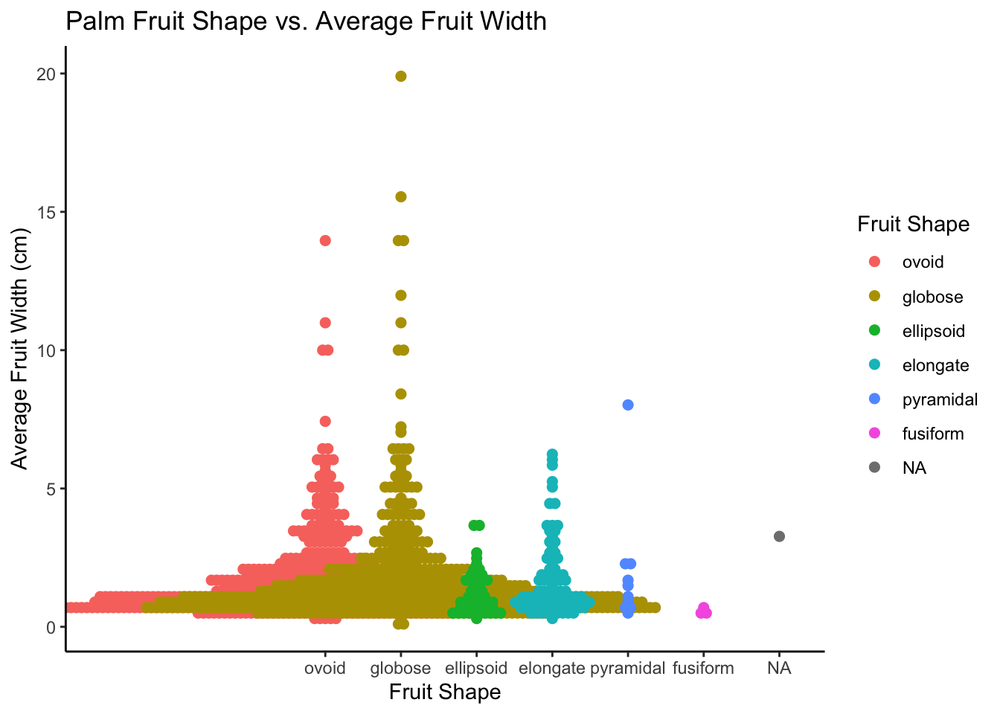

#Load in data
install.packages("tidytuesdayR")## Warning in readRDS(dest): lzma decoder corrupt data##
## There is a binary version available but the source version is later:
## binary source needs_compilation
## tidytuesdayR 1.0.2 1.1.2 FALSE## installing the source package 'tidytuesdayR'install.packages("readr")##
## There is a binary version available but the source version is later:
## binary source needs_compilation
## readr 2.1.4 2.1.5 TRUE## installing the source package 'readr'install.packages("bit")##
## There is a binary version available but the source version is later:
## binary source needs_compilation
## bit 4.0.5 4.6.0 TRUE## installing the source package 'bit'install.packages("vcd")##
## There is a binary version available but the source version is later:
## binary source needs_compilation
## vcd 1.4-11 1.4-13 FALSE## installing the source package 'vcd'install.packages("grid")## Warning: package 'grid' is a base package, and should not be updatedinstall.packages("ggmosaic")##
## The downloaded binary packages are in
## /var/folders/sn/blx0r77j44d3jcgszq6dw0d80000gn/T//RtmpQnMaMW/downloaded_packagesinstall.packages("waffle")##
## There is a binary version available but the source version is later:
## binary source needs_compilation
## waffle 0.7.0 1.0.2 FALSE## installing the source package 'waffle'install.packages("ggridges")##
## There is a binary version available but the source version is later:
## binary source needs_compilation
## ggridges 0.5.4 0.5.6 FALSE## installing the source package 'ggridges'install.packages("ggbeeswarm")##
## The downloaded binary packages are in
## /var/folders/sn/blx0r77j44d3jcgszq6dw0d80000gn/T//RtmpQnMaMW/downloaded_packageslibrary(ggplot2)
library(vcd)## Loading required package: gridlibrary(grid)
library(ggmosaic)##
## Attaching package: 'ggmosaic'## The following objects are masked from 'package:vcd':
##
## mosaic, spinelibrary(tidyr)
library(dplyr)##
## Attaching package: 'dplyr'## The following objects are masked from 'package:stats':
##
## filter, lag## The following objects are masked from 'package:base':
##
## intersect, setdiff, setequal, unionpalmtrees <- readr::read_csv('https://raw.githubusercontent.com/rfordatascience/tidytuesday/main/data/2025/2025-03-18/palmtrees.csv')## Rows: 2557 Columns: 29## ── Column specification ─────────────────────────────────────────────────────
## Delimiter: ","
## chr (17): spec_name, acc_genus, acc_species, palm_tribe, palm_subfamily, cli...
## dbl (12): max_stem_height_m, max_stem_dia_cm, max_leaf_number, max__blade__l...
##
## ℹ Use `spec()` to retrieve the full column specification for this data.
## ℹ Specify the column types or set `show_col_types = FALSE` to quiet this message.# Mosaic plot
ggplot(data = palmtrees) +
geom_mosaic(aes(x = product(climbing), fill = climbing, conds = product(erect))) +
labs(
title = 'Palm Tree Growth vs Movement Styles',
x = "Growth Style",
y = "Movement Style"
) +
scale_fill_manual(
name = 'Movement Style',
values = c('both' = '#4db6ac', 'climbing' = '#ff6f61', 'non-climbing' = '#ffb74d'),
labels = c('both' = 'Both', 'climbing' = 'Climbers', 'non-climbing' = 'Non-climbers')
) +
theme_classic()## Warning: The `scale_name` argument of `continuous_scale()` is deprecated as of
## ggplot2 3.5.0.
## This warning is displayed once every 8 hours.
## Call `lifecycle::last_lifecycle_warnings()` to see where this warning was
## generated.## Warning: The `trans` argument of `continuous_scale()` is deprecated as of ggplot2
## 3.5.0.
## ℹ Please use the `transform` argument instead.
## This warning is displayed once every 8 hours.
## Call `lifecycle::last_lifecycle_warnings()` to see where this warning was
## generated.
#Waffle Plot
freq_table <- as.data.frame(table(subfamily=palmtrees$palm_subfamily))
custom_colors <- c("Arecoideae" = "#FF6F61",
"Calamoideae" = "#4DB6AC",
"Ceroxyloideae" = "#8E44AD",
"Coryphoideae" = "#3E6C88",
"Nypoideae" = "#FFB74D")
# Create the waffle plot
ggplot(data = freq_table) +
aes(fill = subfamily, values = Freq) +
waffle::geom_waffle(n_rows = 30, size = 0.33, colour = "white") +
coord_equal() +
scale_fill_manual(values = custom_colors) + # Apply custom colors
theme_void() +
labs(title = "Palm Subfamilies") +
guides(fill = guide_legend(title = "Palm Subfamily"))
#Ridgeline Plot
palmtrees_fil <- palmtrees %>% dplyr::filter(!is.na(palmtrees$fruit_shape))
ggplot(data = palmtrees_fil) +
aes(x=average_fruit_length_cm,y=fruit_shape,fill=fruit_shape) +
ggridges::geom_density_ridges() +
labs(
title = 'Average Palm Fruit Length by Shape',
x = "Average Fruit Length (cm)",
y = "Fruit Shape"
) +
guides(fill = guide_legend(title = "Fruit Shape")) +
ggridges::theme_ridges() +
scale_x_continuous(limits = c(0, 10))## Picking joint bandwidth of 0.366## Warning: Removed 342 rows containing non-finite outside the scale range
## (`stat_density_ridges()`).
#Beeswarm Plot
palmtrees_filtered <- palmtrees_fil %>%
filter(!is.na(palmtrees_fil$fruit_shape))
palmtrees_filtered$fruit_shape <- factor(palmtrees_filtered$fruit_shape,
levels = c("ovoid", "globose", "ellipsoid", "elongate","pyramidal", "fusiform", "rouded"))
ggplot(data = palmtrees_filtered) +
aes(x = fruit_shape, y = average_fruit_width_cm, color = fruit_shape) +
ggbeeswarm::geom_beeswarm(method = "center", size = 2) +
labs(title = "Palm Fruit Shape vs. Average Fruit Width",
x = "Fruit Shape",
y = "Average Fruit Width (cm)") +
guides(color = guide_legend(title = "Fruit Shape")) +
theme_classic()## Warning: In `position_beeswarm`, method `center` discretizes the data axis (a.k.a the
## continuous or non-grouped axis).
## This may result in changes to the position of the points along that axis,
## proportional to the value of `cex`.
## This warning is displayed once per session.## Warning: Removed 371 rows containing missing values or values outside the scale range
## (`geom_point()`).